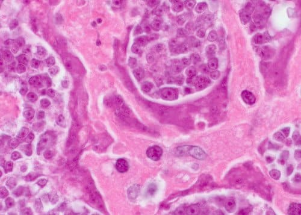

Nieświeży oddech z powodu PASOŻYTÓW. Główny specjalista chorób zakaźnych opowiedział mieszkańcom Warszawy, jak uratować siebie i swoich bliskich.
Od redakcji: Lekarze odkryli nową przyczynę nieświeżego oddechu. To jest infekcja pasożytnicza. Niedawno zakończone badania donoszą, że produkty uboczne pasożytów są toksyczne i tworzą sprzyjające środowisko w żołądku dla rozwoju bakterii gnilnych. Z tego powodu u osób zakażonych pasożytami można zaobserwować nieświeży oddech.
- Dziś porozmawiamy o tym z wiodącym specjalistą chorób zakaźnych, parazytologiem Krzysztofem Drozdowskim.
- Krzysztofie, dzień dobry! Zacznę od głównego pytania. Czy to prawda, że Warszawa jest liderem w zarażaniu ludności pasożytami?
„Tak, Warszawa zajmuje wiodącą pozycję w rankingu infekcji pasożytniczych. Powodem tego jest wyjątkowo zła sytuacja środowiskowa, brak działania władz i lekceważenie ludzi ”.
— Krzysztofie, o ile prawdziwe są dane badań dotyczące powiązania infekcji pasożytniczych z brzydkim zapachem z ust?
- Kilka lat temu społeczność medyczna uważała, że nieświeży oddech powstaje w jamie ustnej. Jednak ostatnie badania dowiodły, że inną ważną przyczyną są problemy żołądkowe (które zawsze występują w przypadku zakażenia pasożytami). Naukowcy powiedzieli również, że nie można zignorować takiego „normalnego objawu”. Zakażenie pasożytami prowadzi do wystąpienia prawie wszystkich poważnych chorób u ludzi.

Nieświeży oddech jest wyraźnym znakiem pasożytów w ciele, prowadzącym do śmiertelnych powikłań
Osobiście ufam badaniom i mogę powiedzieć, że potwierdzają to doświadczenia naszego instytutu. Banalny „nieświeży oddech” z ust przeradza się w poważną chorobę. Zasadniczo około 92% zgonów ludzi jest spowodowanych infekcją pasożytów. I to nie tylko śmierć z powodu choroby. Zdecydowana większość tak zwanych „naturalnych zgonów” jest efektem pasożytniczej aktywności w twoim ciele.
- Zazwyczaj pasożyty oznaczają dla ludzi banalne robaki, jak one mogą doprowadzić do pojawienia się brzydkiego oddechu, a nawet śmierci osoby?
- W rzeczywistości wielkim błędem jest uważanie, że ludzkie pasożyty są wyłącznie
robakami. Istnieje ogromna liczba różnorodnych pasożytów żyjących w różnych narządach. I
prowadzą do różnych konsekwencji. Glisty, a ściślej mówiąc, robaki są bardzo
niebezpieczne. Dosłownie niszczą jelita, prowadząc do ich rozkładu i ostatecznie
śmierci. Nawiasem mówiąc, te same robaki są dość trudne do wykrycia i zniszczenia.
Wraz z nimi istnieją tysiące pasożytów, które mogą żyć w wątrobie, mózgu, płucach, krwi,
żołądku. I prawie wszystkie z nich są śmiertelne. Niektóre z nich natychmiast zaczynają
działać agresywnie i niszczyć ciało. Początkowo część działa niedostrzegalnie, dopóki
ich liczba nie stanie się taka, że organizm nosicielski nie będzie już w stanie
wytrzymać i osoba umrze.
Jednocześnie mogę śmiało powiedzieć, że prawie wszyscy są zarażeni pasożytami. Po prostu
większość z nich jest niezwykle trudna do wykrycia. A kiedy pojawiają się konsekwencje
infekcji pasożytami, lekarze próbują je leczyć. Nawet podczas sekcji zwłok potrzebne są
specjalne testy w celu wykrycia pasożytów. Przynajmniej dla większości z nich.
„Istnieją tysiące pasożytów, które mogą żyć w wątrobie, mózgu, płucach, krwi, żołądku. Prawie wszystkie z nich są śmiertelne. A zwykle zaczyna się od zwykłego nieświeżego oddechu”
— Czy możesz podać konkretne przykłady zarażeniem pasożytami?
-Mogę przedstawić setki przypadków. Być może jednak zwrócę uwagę na te, które
najwyraźniej pokazują niebezpieczeństwo pasożytów.
Po pierwsze, jak się okazało, niektóre tasiemce mogą prowadzić do raka. Co więcej, nie
jest zarażona ta osoba, która formalnie ma pasożyty, a mianowicie robaki. Ale ich
złośliwe komórki rozprzestrzeniają się po całym ciele, zarażając ludzi. Dzieje się tak,
gdy larwy robaka dostają się do ludzkich węzłów chłonnych z jelit. W rezultacie
zamieniają się w guzy rakowe, które szybko zarażają ludzi. Śmierć następuje dosłownie w
ciągu kilku miesięcy. Tylko w tym tygodniu odnotowano kolejny przypadek śmierci
człowieka z powodu takich nowotworów.
W centrum tego zdjęcia: komórki złośliwego guza, które dotarły do osoby z robaka
pasożyta

Innym częstym przypadkiem jest zakażenie pasożytami ludzkiego mózgu. Prowadzi to do nerwicy, szybkiego zmęczenia, nadmiernej pobudliwości i nagłych zmian nastroju. Na późniejszym etapie, gdy mózg wypełnia się pasożytami, rozwijają się poważniejsze choroby, które ostatecznie prowadzą do śmierci.
„Prowadzimy archiwum zdjęć z autopsji, w których odkryto pasożyty w narządach. Nie mogę wam pokazać tych zdjęć, są okropne ”.
Trzecim przykładem jest zakażenie pasożytami ludzkiego serca. Uważa się, że jest to bardzo rzadka choroba. Ale w rzeczywistości, chociaż w niewielkiej ilości, robaki występują u około 23% ludzi. To jest praktycznie co czwarty. Na wczesnym etapie są całkowicie niewidoczne, ich wpływ na ciało jest zredukowany do zera. Ale im więcej czasu mija, tym bardziej zauważalna jest aktywność robaków w ludzkim sercu. Stają się one przyczyną wielu chorób serca, a jeśli mówimy o nagłej śmierci z powodu zatrzymania akcji serca, pasożyty te stanowią prawie 100% takich przypadków.
-Jakie jeszcze jest niebezpieczeństwo od zarażenia pasożytami?
U mężczyzn pasożyty powodują: zapalenie gruczołu krokowego, impotencję, a następnie gruczolaka, zapalenie pęcherza moczowego, piasek i kamienie nerkowe w pęcherzu.
U kobiet: ból i zapalenie jajników. Rozwijają się: włókniak, mięśniak, mastopatia włóknisto-torbielowata, zapalenie nadnerczy, pęcherza i nerek. I oczywiście następuje przedwczesne starzenie się skóry. ”
—Jak uchronić się przed pasożytami? Czy są jakieś badania, leki?
—Niestety możemy stwierdzić, że dzisiaj nie ma naprawdę dokładnych narzędzi do diagnozowania pasożytów wewnątrz człowieka”. Częściowo wynika to z obecności ogromnej liczby gatunków pasożytów (tysiące opcji), a częściowo z niezwykle wysokiego poziomu trudności w ich wykryciu. Pełna procedura analizy pasożytów w Polsce jest dostępna tylko w kilku miejscach i kosztuje bardzo dużo pieniędzy.
Pierwszymi objawami, za pomocą których można powiedzieć, że pasożyty żyją w twoim ciele, są:
- Nieświeży oddech
- Alergia (wysypka, łzawiące oczy, katar)
- Częste przeziębienia, zapalenie migdałków, przekrwienie błony śluzowej nosa
- Przewlekłe zmęczenie (szybko się męczysz, bez względu na to, co robisz)
- Częste bóle głowy
- Zaburzenia trawienne - zaparcia lub biegunka
- Ból stawów i mięśni
- Nerwowość, zaburzenia snu i apetytu
- Cienie, worki pod oczami
Jeśli masz 2 z wymienionych wyżej objawów, na pewno masz pasożyty w ciele.
Jeśli mówimy o lekach,wygląda to problematycznie. Do tej pory istnieje tylko jeden nowo
stworzony preparat, który pozwala pozbyć się pasożytów.
- Co to za środek i kto go stworzył? Czy możesz nam powiedzieć coś więcej?
- To jest środek przeciw pasożytom , który został
stworzony przy udziale Włoskiego Instytutu Parazytologii i grupy młodych niezależnych
naukowców. Jednocześnie zaangażowali się w prace nad dwoma tuzinami środków na pasożyty.
Ale w procesie rozwoju postanowiono skupić się na ,
jako najbardziej skutecznej opcji.
to wyjątkowy stop czarnego czosnku, alg francuskich
i czerwonych, wrotyczu pospolitego i tymianku, a także kilkunastu innych składników
pomocniczych. W procesie tworzenia i testowania ten preparat okazał się niezwykle
skuteczny. Dziś jest to naprawdę jedyna produktywna nowość. I jeśli chodziłoby tylko o
pieniądze, cała wyprodukowana objętość zostałaby wysłana na eksport. W całej Europie są
gotowi kupić za niemal każdą cenę. Ale mamy
zamówienie od władz, zgodnie z którym znaczna część funduszy powinna pozostać w kraju i
sprzedana obywatelom Polski.
Ponadto marża eksportowa dla zachodnich nabywców (
jest sprzedawany dziesięć razy drożej niż kosztuje) pozwala nam sprzedawać go w kraju po
cenie znacznie niższej niż kosztuje.
— Dlaczego jest taki dobry? Czy w jakiś sposób różni się od innych opcji oczyszczania organizmu z pasożytów?
— Jak już powiedziałem, jest to jedyny działający środek oczyszczający organizm od
pasożytów ze wszystkich istniejących na świecie na dzień dzisiejszy. Właśnie dlatego tak
o niego się starają międzynarodowe sieci aptek i firmy farmaceutyczne. W porównaniu z
innymi środkami przeciw robakom, ten środek działa natychmiast na całe spektrum
pasożytów, którymi ludzie mogą zostać zarażeni. Biorąc pod uwagę problemy z diagnozą,
pozwala to skutecznie oczyścić cały organizm. Powiedziałem, że prawie niemożliwe jest
zrozumienie, jakiego rodzaju pasożyty ma dana osoba. niszczy pasożyty i oczyszcza organizm od pasożytów
żyjących wszędzie - od mózgu i serca po wątrobę i jelita. Żaden z istniejących środków
nie jest już w stanie tego zrobić.
Ponadto nie jest to preparat chemiczny, ale całkowicie naturalny produkt, który wyklucza
reakcję alergiczną, nierównowagę jelit i inne problemy, które mogą wystąpić podczas
leczenia klasycznymi tabletkami, które oprócz rezultatu również obciążają organizm,
zmuszając go do przetwarzania wielu różnych związków chemicznych.
— Myślę, że nasi czytelnicy będą zainteresowani dowiedzieć się o tym, skąd wziąć ?
—W tej chwili jest dostępny do zamówienia tylko
na stronie
projektu. Wielokrotnie próbowaliśmy dostać się do sieci aptek, ale oni chcą ustalić
najwyższą możliwą cenę i sprzedawać w kilka razy drożej niż chcemy. Widzicie, Instytut
Parazytologii jest strukturą non-profit. I nie mamy celu do zarobienia. Chcemy tylko
udostępnić ten środek całej ludzkości. Dlatego sprzedajemy intensywnie, kompensując
różnicę wynikającą z jego eksportu. A głównym celem sieci aptecznych jest zarabianie
pieniędzy. Dlatego mamy radykalnie różne podejścia do ustalania cen.
Mam nadzieję, że z czasem będziemy mogli się dogadać, a będzie sprzedawany po tej samej cenie w sieciach
aptecznych. W międzyczasie można go zamówić tylko online. Staraliśmy się, aby wszystko
było wygodne i proste - produkt jest dostarczany firmą kurierską, a płatność następuje
dopiero po otrzymaniu i weryfikacji. Nie są potrzebne żadne dodatkowe funkcje.
— Może chcesz powiedzieć coś naszym czytelnikom, zanim skończymy wywiad?
— Jedyne, co chcę powiedzieć, to dbajcie o swoje życie i zdrowie. Możecie nawet tego nie podejrzewać, ale w każdym z prawdopodobieństwem 97-98% są żywe pasożyty. Mogą być wszędzie - we krwi, jelitach, płucach, sercu, mózgu. Pasożyty dosłownie pożerają cię od środka, jednocześnie zatruwając organizm. W rezultacie istnieje wiele problemów zdrowotnych, które skracają życie o 15-25 lat. Nie wspominając już o problemie nagłych zgonów, które zwykle są również związane z działaniem pasożytów na ludzki organizm.
P.S .: Poprosiliśmy Krzysztofa Drozdowskiego o dodatkowe zniżki dla naszych czytelników. Poszedł nam na spotkanie, a teraz każdy może kupić z dodatkową zniżką.
Wywiad przeprowadziła Krystyna Rabiej
Zdjęcia z otwartych źródeł
Sabina, Konin -
Zamówiłam sobie ten środek. Martwiłam się o swój nieświeży oddech. Już piątego dnia czułam, że mój oddech stał się świeższy i przyjemniejszy. Wraz z tym poprawiła się praca żołądka. Teraz do profilaktyki piję kurs co 3 miesiące.
Waldemar, Kielce -
Zamówiłam sobie ten środek. Martwiłam się o swój nieświeży oddech. Już piątego dnia czułam, że mój oddech stał się świeższy i przyjemniejszy. Wraz z tym poprawiła się praca żołądka. Teraz do profilaktyki piję kurs co 3 miesiące.
Natalia, Sieradz -
Zamówiłam sobie , przywiózł kurier drugiego dnia. Zaczęłam stosować i wylazło ze mnie takie ... Nawet nie myślałam, że w jelitach może być tak wiele robaków. Aż strasznie pomyśleć, że z tym żyłam.
Weronika, Toruń -
Dzięki za artykuł! Zamówiłam też ten preparat dla siebie.
Michał, Łódź -
Zamówiłem ten produkt. Obiecali dostarczyć w ciągu tygodnia, więc czekam
Daria, Wrocław -
Stosowałam . Efekt jest po prostu wspaniały. Czułam się młodsza i zdrowsza. Odporność wyraźnie wzrosła, przez 8 miesięcy od zakończenia kuracji nigdy nie chorowałam. Wcześniej mogłam tylko o tym śnić. Polecam wszystkim.
Leokadia Kożuchowska, Kraków -
Ostatnio oglądałam program o ludzkich pasożytach. Tam rozmawiali o tym preparacie, chwaląc go, mówiąc że to najlepszy środek na świecie przeciw pasożytom. Wydaje mi się że była tam nawet jakaś gwiazda.
Aleksandra, Białystok -
Babcia uczyła mnie pozbywać się pasożytów piołunem. Cała rodzina go pije, a u dzieci wypadają glisty. Ale nie mogłam poradzić sobie z nieświeżym oddechem. Zamówiłam , teraz nie mam problemów z nieświeżym oddechem. Nawiasem mówiąc, przestaliśmy pić ten gorzki piołun i przeszliśmy na . Efekt jest taki sam, cena jest adekwatna, wygodniejszy w stosowaniu.
Paweł, Nowogard -
Od dawna cierpię na bóle głowy. Wypiłem kilka tygodni temu, wszystko zniknęło. Teraz myślę - może tam coś mieszkało...
Wioletta, Katowice -
Wywiad jest bardzo interesujący, dzięki! Otwieracie ludziom oczy!
Weronika, Lublin -
Dołączam do rekomendacji. Kiedy zaczęłam stosować, dosłownie ze mnie zaczęło wypadać takie, że spanikowałam i pojechałam do lekarza. Znalazłam tam parazytologa, spojrzał na to wszystko i powiedział, że to rzekomo robaki z wątroby. A gdyby nie , zabiliby mnie za 2-3 lata.
Regina, Malgork -
Ale to nie ściema? Dlaczego sprzedają tylko online?
Sabina, Sanok -
Regino, czy w ogóle czytałaś artykuł? Sprzedają go w Internecie, ponieważ w aptekach zwiększają cenę, ponieważ chcą na tym zarobić! Tak i jaka może być ściema, jeśli płatność jest przy odbiorze? Zamówiłam - kurier dostarczył, sprawdziłam wszystko, spojrzałam i dopiero potem zapłaciłam. Teraz sprzedają wszystko w Internecie - od ubrań i butów po sprzętu AGD i mebli.
Regina, Malgork -
Przepraszam, na początku nie zauważyłam na stronie informacji że płatność jest przy odbiorze. Wtedy wszystko jest w porządku, jeśli zapłacę przy odbiorze. Zdecyduję się i też złożę zamówienie.
Katarzyna, Iława -
Świetny środek. Kupiliśmy go z mężem, oboje mamy znaczną poprawę samopoczucia. Rzeczywiście, czuję się, jakby byłam młodsza, jest więcej siły i energii. Pasożyty z pewnością niszczą człowieka. Kiedy się ich pozbędziesz, poczujesz się zupełnie inaczej.
Władysław Dedyk, Międzyzdroje -
Dziękuję za wskazówkę. Konieczne jest oczyszczanie. Co najmniej raz w życiu. Nigdy tego nie robiłem, ale teraz myślę, że bez pasożytów wszystko będzie lepiej :) A fakt, że przynajmniej są jakieś, jest prawie pewien. W ciągu życia one po prostu się zbierają.
Julia, Warszawa -
Przeczytałam opinie i zdałam sobie sprawę, że muszę to zamówić) Idę złożyć zamówienie.